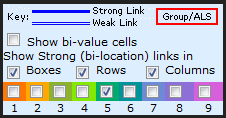
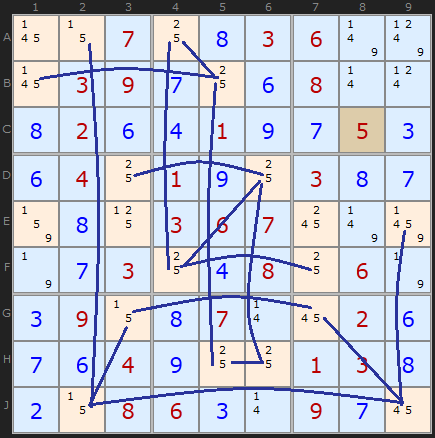
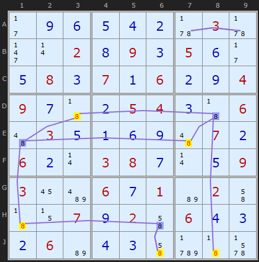
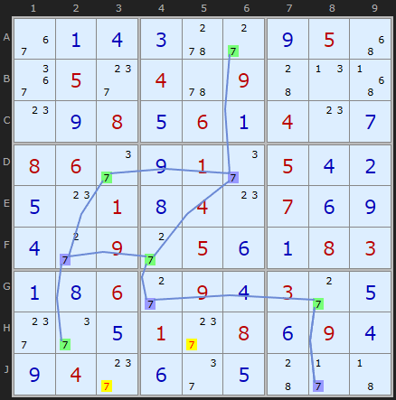
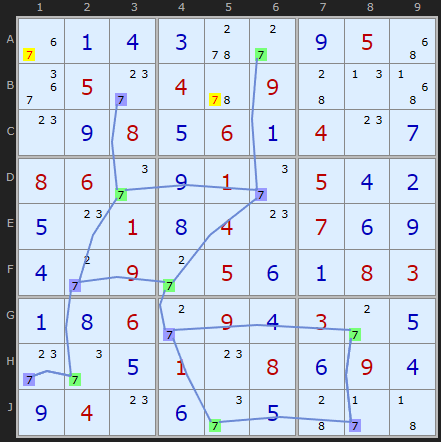

SudokuWiki.org
Strategies for Popular Number Puzzles
Simple Colouring
Simple Colouring, also known as Single's Chains is a chaining strategy and part of a large family of such strategies. 'Simple' refers to the idea that one candidate number is considered - in contrast to 'multi-colouring' which is the basis of 3D Medusa. Simple Colouring also related to X-Cycles.
A 'chain' is a series of links hopping from one candidate to another following very simple rules. A candidate can either be ON or OFF. That is, we either think it is a possible solution to that cell, or we do not. There are consequences to the rest of the board when we 'link' these two states. When we are starting out we don't know which will be ON or OFF so any two colours will do.
A 'chain' is a series of links hopping from one candidate to another following very simple rules. A candidate can either be ON or OFF. That is, we either think it is a possible solution to that cell, or we do not. There are consequences to the rest of the board when we 'link' these two states. When we are starting out we don't know which will be ON or OFF so any two colours will do.


Now, the Colouring aspect which sometimes gives this strategy its name, is illustrated in the rules below. Each end of each link can be assigned one of two colours. You can start in any position, taking any 5 on the board and give it one colour. Then follow each chain link alternating the colour. The strategy is all about recognising that one of those colours will be the solution and the other not. The rules that follow identify the contradictions that allow us to eliminate candidates or decide which colour (which end of every link) is the solution.
Just a note on rule numbers: The solver uses the same search algorithm for both Simple Colouring and 3D Medusa so I have synchronised the rule numbers that are returned. Rules 1 and 3 apply only to 3D Medusa (Multi-colouring) since they extend chains to different numbers. However, the solver needs to look for Simple Colouring first because I deem it to be a simpler strategy that's easier to search for.
Rule 2 - Twice in a Unit

This puzzle is quite simple up to the Rule 2 example which is the main bottleneck. Mapping all the chain links for number 8 we find something interesting in row J. There are two yellow 7s in J6 and J8. This Rule says that if any unit has the same colour twice ALL those candidates which share that colour must be OFF. The rule is also present in column6. The alternative colour will be ON and the solution for that cell.
(Actually yellow is the colour I use to show eliminated candidates. The solver will return Green and Blue for the colouring but then switch one or other to yellow if the candidates are to be eliminated). [Example updated April 2026]
Rule 4 - Two colours 'elsewhere'

If you have looked at X-Cycles you'll spot how these two strategies overlap - if your colouring happens to form a loop, as it does here. Also, if you've read as far as AICs you may recognize the pattern of 3s as a classic double alternating Nice Loop with a discontinuity in B5. But that's another story.
Michael Wallis is an early pioneer of Simple Colouring and this rule family.
This rule is shared with 3D Medusa.

Rule 4 is simply put: if you can spot a candidate X that can see an X of both colours - then it must be removed. The eliminations above allow us to retrace the links and grab a couple more candidates with the same rule. It is easy to pick out the blue and green 7s that point to the eliminations.
The documentation on this page has changed in February 2015 when a reader called FallsOffRocks wrote to me to point out the algorithm for the old Rule 5 could always get all Rule 4 eliminations. So have rolled Rule 5 into Rule 4. Both rules are examples of off-chain eliminations looking at candidates in different cells. The simplification also affects 3D Medusa.
The strategy which naturally follows on from Singles Chains is 3D Medusa, but you should also read up on the article Introducing Chains and Links.
Simple Colouring Exemplars
These puzzles require Simple Colouring strategy twice at some point and are graded tough so some other similar level strategies also required.New examples added April 2026.
They make good practice puzzles.
Comments
Email addresses are never displayed, but they are required to confirm your comments. When you enter your name and email address, you'll be sent a link to confirm your comment. Line breaks and paragraphs are automatically converted - no need to use <p> or <br> tags.
... by: Red
Love your website, was delighted to realize you are actively updating your posts and responding to comments. I noticed the Exemplars currently posted seem to only demonstrate Simple Coloring in your solver if the earlier strategies besides Naked/Hidden Pairs are turned off. This may be what you meant, but I think it could be clearer (if that was your intention). [Both examples displayed in page do lead to Simple Coloring, though, even if loaded from the start with.]
... by: Visitor
please look at this situation:
41....6......6173.76...9.151..832946396745128284196573.....43.1.31.5..6..4..13...
415378692928561734763429815157832946396745128284196573672984351831257469549613287
The solver finds the rectangle elimination due to the triple 2, 4 and 8 in C5, C7 and H7. Yet when I untick 'Rectangle Elimination' (and keep all other 'Tough Strategies' selected), it runs out of known strategies.
But as far as I see, the 'simple colouring' method reveals 7 to be removed from G3.
Why does the solver not detect this? You have a clue?
... by: Jim-
... by: aba69
If for Rule 2 I click on Load Example or Load from start, I get the example for Chute remote pairs.
Only if I activate beforehand on the right side "Siple Coloring" the example for it ist shown.
Can you confirm this or did I get someting wrong ?
... by: Sebastian
Terrific site, by the way! Tausend Dank, as we say in Germany.
... by: MMMK
... by: Tony
You start with Rule 2 where you tell us the 5 in E3 is eliminated by Rule 4. Where is this explained? This reader is lost. I know I'm slow but it seems this page could be a little gentler. Thanks
I was thinking of someone who might be stepping through the example puzzle in the solver. But Having done that myself I get a series of Rule 4 and one Rule 2 and it didn't follow. With my new string format I can take the user to the exact point in solver now, so I've re-written the rule 2 text and changed the diagram
Hope you think it's a bit better
Appreciate the feedback!
... by: Evelyn
... by: M.A.Kulkarni
... by: Molly
... by: Paul Philbin
... by: Picks
What does this indicate for the chain as a whole, or does it simply indicate that I've made an error somewhere?
... by: Greg
The solver uses two chains of 4s (rule 4) followed by a chain of 5s (rule 2). However, if you use the chain of 5s first you don't need the chains of 4s.
I found that chain first and was surprised because the puzzle was easier than I was expecting.
I guess the solver's algorithm picks the first chain it finds instead of checking which is more efficient.
... by: jon
... by: Ally
... by: Kent
... by: Basil Dalie
Could you explain me what to do in the situation in which, during the construction of the chain, we find a strong link between two cells that have already been colored with the same color?
... by: Steve
The image at
https://i.imgur.com/m91sfxS.png
shows an instance with multiple chains where rule 4 is eliminating a candidate from the second chain; if that happens, then the next element in chain 2 is the solution and so on.
... by: Hound99
In this case, shouldn't BOTH be eliminated because you have two of the same color on a single unit (row)?
... by: Alpo1
I have a question about linking pairs. I was doing an Y-wing example and came across a Singles Chain solution. In that solution, for some reason a pair on the same row (7,8 in H1 and 2,7 in H7) wasn't linked.
The situation is quite similar as it is in the first example on this page, linking fives in J2 and J9.
Actually here's a screen capture: https://imgur.com/QolT21N
Why aren't the pair in question linked?
Thanks
... by: William
... by: Harley
In trying to solve single chains, it seems there should be a way to either turn a candidate on or off but I can't figure out how. Am I missing something?
... by: t.l. shroeger
The question is: when two or more chains are in a puzzle, how are the colors used to start a chain determined?
Thanks,
Tom
... by: RD
Having noted this, even greater simplification of strategies can be achieved by noting that all instances of Rule 4 Singles Chains are in fact examples of X-cycles with an odd number of nodes - the candidate that sees both ends of a chain that begins and ends on strong links will be the odd one out, linked by a W-W connection. In which case the strategy of 'Simple Colouring/Singles Chains' becomes entirely redundant.
From the humanities side, I would point out that the apostrophe in "Single's" isn't needed, you're trying to mark plurality not possession.
Thanks for the challenging and interesting site.
... by: Tom
Enjoy your site and use it often, keep up the good work.
Thanks,
Tom
If you could link them then they would become one chain. That may not be possible with this number but there are several ways to extend chains, eg through cells (see 3D Medusa).
... by: Jason
"Rule 2 states that if a row or a column or a cell contains 2 candidates that share the same color, they are contradicting to each other, and they can be removed. Therefore, the candidates circled in red can all be removed. "
... by: Volker Schaefer
One of them starts at b1 to b5 to a4 to f4 to d6 to d3 etc.
Colouring this chain means that b1 gets green and d3 gets blue.
Why isn't it possible to remove the 5 of e1, which sees both ends of the chain?
Thanks for your help.
Note, there are two chains and they are separate when considering this strategy
... by: Trevor
" I should remove all other candidates on the ON cells (leaving the one correct candidate behind)."
My point is that the solver is subtractive. I can't set a cell to a certain number. I have to remove candidates leaving one behind. The point where a single candidate is turned into a solution is in the solver "Check for solved cells" and must be there only. Might seem a pedantic point but its consistent behaviour I'm looking for.
It's true the current implementation only does the off side. I'll release an update soon as soon as I've done more testing
... by: Trevor
I do note that Rule 2 usually gives a lot of singles anyway, so its not holding it back too much I believe, but I'll need to check quite a few examples.
... by: Clheins
... by: Jackg
G3 is not linked up into box 4 containing more than two 5's resulting in E3 seeing two colors. Any reason (besides giving an example of rule 5) that G3 couldn't be linked to E3 resulting in two colors (blue) in a unit therefore allowing for the removal of all blues (rule 2)?
... by: Alan
You can start with any number or color as long as there is only two of that number in any box,column or row. Once the chain is completed using alternate colors you simply look for any box, column or row that has two or more of the same color and then you simply eliminate all of that color in that box, column or row.
Did I cover everything in those two sentences?
[email protected]
... by: Steve Thier
... by: td
... by: Ian
Great site! Fascinating!
Ian
... by: Mike Kerstetter
Multi-Coloring Strategy
But if you have two isolated chains you can use them individually to use Single Chains strategy - they shouldn't inhibit each other. Just don't reach across.
... by: Can I use singles chains in Windoku puzzles?
Anyway, I find that sometimes singles chaining will indicate a number can be eliminated from a cell and the program indicates that it cannot. I'm thinking that either I am missing something, but cannot use your solver to find what I've missed. Maybe I can use the killer solver, but I think it works differently. I just want to know if I should be using singles chaining for this type of Sudoku puzzle and if your solvers can be used to solve them. I really like your solvers and they are very helpful in learning the various strategies.
It is very dangerous to use the normal Sudoku solver for Windoku. Windoku has extra constraints (the four 3x3 blocks) that mean you can't assume certain things. All the normal Sudoku strategies apply but the normal Sudoku solver is not aware of the extra constraints so it will go down the wrong path eventually. It is also likely the solver will find multiple solutions as well.
I intend to provide a solver for Windoku just as I have a seperate solver for Sudoku X and Jigsaw.
... by: Ludek Frybort
The interesting part comes if you run it through the solver to the point where it uses simple colouring on 9s.
You get this:
CLICK
(but if you load this in the solver, you'll have to go through some pointing pairs and an X-wing to eliminate some candidates, which were already eliminated in the original process, to get to the point I'm talking about)
At this point (actually right before this point but the order doesn't matter) I tried to use simple colouring on 2s - unsuccessfully, nothing was eliminated. But since I did it on paper, the "colors" remained on the sheet.
Now I correctly guessed it was the time to look for Y-wings. Before I could spot the D2 E3 E7 Y-wing, which the solver uses to solve the puzzle, I spotted another one at E4 F5 F9.
The latter Y-wing is useless itself, it doesn't eliminate anything, but I noticed that the 2s on both its ends have the same color from the previous attempt at colouring.
So the logic of Y-wing says one of them must be the solution and the logic of simple colouring says that if one of them is, the other must be, too. So I could conclude both must be the solution, quickly solve all the remaining 2s and the rest was trivial.
I'm posting this firstly to just share what I find an interesting puzzle, and secondly in the hope that maybe somebody with deeper understanding of the strategies might find a way to generalize it and maybe extend the power of the colouring strategies.
... by: John Riddle
... by: John Riddle
... by: Luke
... by: Peter Foster
We colour a possibility and 'see where that takes us'. Maybe during the colouring it indicates that the number we started with can't be right or the same number in other parts of the grid can't be there.
But essentially it seems to me that we are 'trying' a number and finding out whether it is valid or not.
The only difference is that should we 'try' the number and it 'not' result in eliminations in other parts of the grid, then it can't be assumed that that number was correct. It's a negative rather than positive result.
Am I misunderstanding something ?
I use the 2 extensively, but it does seem like I'm getting short-changed when compared to X-wing etc.
I try and be more clear about this subject on this page
Crook's Algorithm
I hope that helps a bit
... by: Joe Badillo
Why is the 5 in A2 eliminated and not the 5 in J2
Why is the 5 kept in D3 and not the 5 in D6
Why is the 5 in A1 not colored at all and will eventually kept
Simple coloring is not so simple for me
Please help
... by: Michael Wallis
Your sudoku solver returned the following when I clicked 'Take Step':
"SIMPLE COLORING (RULE 4): Two different colors for 4 appear in Box 3 with more than two occurences for 4. The uncolored candidates can be eliminated from B8 C7".
However, when I clicked on the explanation for 'Simple Colouring', I only saw references to Rules 2 and 5. What is 'Rule 4' and why isn't it in the explanation for 'Simple Colouring'. You did mention a Rule 4 for 3D-Medusa, but that seems to be a different strategy than simple colouring.
... by: Guy Renauldon
The candidates 5 are not shown in E3 in the introduction and in the second diagram because these diagrams represent a step after the third diagram (the third diagram is the first step if you prefer) First and second grid are identical.
To solve this sudoku two steps are necessary:
First step (third diagram): rule 5 allows you to remove the 5 in E3.
Second step (second diagram): the 5 being removed from E3 give a strong link between E1 and D3. Then you can use Rule 2 which allows you to remove all yellow candidates 5 in the second diagram.
Very good example of Single's chains: rule 5 followed by rule 2
... by: glisten
... by: Donald Waddell
... by: Zophuko
Thanks for a wonderful wevbsite
... by: John
... by: Zophuko
Another observation and question regarding your example next to the Rule 5 discussion above. It seems to me that, under the rules, the following connections could also be made: A4 to B5 to B1; B5 to H5 to H6 to D6 to D3; D6 to F4 to A4; F4 to F7 to G7. What is the reason you do not show those links?
... by: Zophuko
... by: Zophuko
Referring to the example, I do not perceive clear and restrictive rules for not drawing links between the following: A2 and C3, D6 and E7, H6 and G7, D6 and F7, A4 and D3, A1 and E1; or B1 to E1, or A1 to D3 leaving B1 unlinked.
Someone please explain the rules that prevent these kinds of links but allow those shown.
... by: Ed
From reading through the posts below it looks like there may be some confusion regarding single chains and the explanation above. Some of the user comments seem to prove the logic or point out alternative methods to solving the example cells in question, but it still looks like there may be a bit of confusion on, for example, where to start, what color to start with, etc.
Basically restating what you've presented above...
1) Pick a number and link all of the single chains: A single chain occurs in a row, column or box (9 cells) when there are only two occurrences of that number in the given row, column or box.
From the first example puzzle above you chose the number 5. Notice that box 1 has three 5s so there are no single chains (both starting AND ending) in that box. Column 2, however, has only two 5s in it and they are connected as a single chain (A2->J9: both starting AND ending in that column). The 5s in Row D get connected (D3->D6) because there are only two in that row. Notice that the 5s in Row E don't get connected because there are more than two in that row. This process is repeated until all of the single chains are completed and you end up with what you've shown in the first example puzzle above.
2) Add the alternating colors: Start anywhere in the puzzle with any the chains you've just laid out and color one of the cells that is pointed to by one of the chains. It doesn't matter where you start. From there, branch out, making sure to alternate colors as you move along the various connections.
3) Eliminate the numbers in the cells (if possible) using the rules provided above:
Rule 2 (Twice in a Unit): If you see a box, row or column with two cells that have the same color, remove all instances of the number that share that color.
In the example above, there are three instances of units that contain more than one 5 with the same color: Box 1: (A2 & B1), Row A (A2 & A4) and Column 1 (B1 & E1). In addition to the four cells (A2, A4, B1 and E1) that are colored the same in these three units, all of the cells of the same color can be removed.
Rule 5 (Two Colors Elsewhere): If there is a cell that can "see" two other chained cells with alternate colors, it can be eliminated.
The third example puzzle above shows the single chains drawn in blue (I think the G7->J9 link is supposed to be blue to show it is also a chain). Cell E3 sees a blue 5 (E9) and green 5 (G3) and therefore the 5 in cell E3 can be eliminated. Notice that the 5 in cell E3 was not part of the original network of single chains.
Basically, Rule 2 helps eliminate candidates that are part of the network of chains and Rule 5 helps eliminate candidates that the network of chains can "see".
Reasonable?
... by: John
We have a chain, between PAIRS of a DIGIT, which has an ODD number of links. Any cell which can see BOTH ends of the chain cannot have that DIGIT.
Why? See the diagram where we have a chain between pairs of 9. One end is C2, the other end is G7.
Case 1: Try C2=9, follow the chain, G7="not9".
Case 2: Try C2="not9", follow the chain, G7=9.
One of these cases must be right but we don't know which.
If Case 1 is true, and C2=9, then C7 cannot be 9 because it can see the 9 at C2.
If Case 2 is true, and C2="not9", then C7 cannot be 9 because it can see the 9 at G7.
So C7 cannot be 9 in either case - because it can see both ends of a chain with an odd number of links.
It does not matter "where we start".
If we have a chain of pairs of digits with more than 3 links, we can look at all the sub-chains which have an odd number of links. So, with 4 links p-q, q-r, r-s, s-t, we first look at p-q, q-r and r-s. Any cell which can see both p and s cannot have the digit. We also look at q-r, r-s and s-t. Any cell which can see both q and t cannot have the digit.
... by: Lenni Nero
Might I please ask, for those of us who are red-green colour-blind (about 10% of males), would please avoid using those colours together whenever you do a re-write of the examples. TIA.
... by: ozzy
The second rule is very hard for me to understand.
Thank you for a wonderful site!
... by: Robin
... by: Mike
... by: Marge Falconer
... by: Lea Hayes
What is the difference between single's chains and x-cycles? Do x-cycles always cover the same ground, or are they completely different?
... by: Ben Wearn
... by: Steve
Interestingly, though, example 1 also has an X-cycle with a weak link discontinuity at X, which provides a different reason for eliminating 5 at X.
... by: Mike Wallis
The explanation for Rule 1 states that 5 can be removed from X (G3) because it's outside the chain and points to A (D3) and D (G8).
However, the explanation for Rule 2 states that X (G3) and D (G8) are the "false' color because they're in the chain, both are blue, and both in the same row.
How can a square be both in a chain and outside of it at the same time? Moreover, Example 1 shows X (G3) and D (G8) in two separate chains - not in "a' chain.
There is another chain that runs from F to C, C to D, D to E, E to B, B to A, and A to X. However the example for Rule 2 doesn't show that.
In fact, none of the examples on this page show Rule 2 in action. They only show Rule 1.
The disconnect between Rule 2 and the examples has been very confusing to me and has caused me difficulty in solving puzzles using this technique. For this reason, I think the article for Singles Chains needs to be revised with new examples that more accurately reflect Rule 2.
... by: carl collins
... by: Don
... by: Clark
When constructing the chain, you can't go from D to X because there are 4 candidate squares for 5 in their shared unit (row G). Note that X can only be colored from A.
As long as you only color the conjugate pairs, you should end up with the same result.
... by: Semax
So in the first example you can link D7 to E8 because in their shared unit (box 6) there is no other cell containing a 5. In other words, if D7 is 5 then E8 can't be 5, and vice versa. Therefore it doesn't matter what happens in rows D and E or in columns 7 and 8.